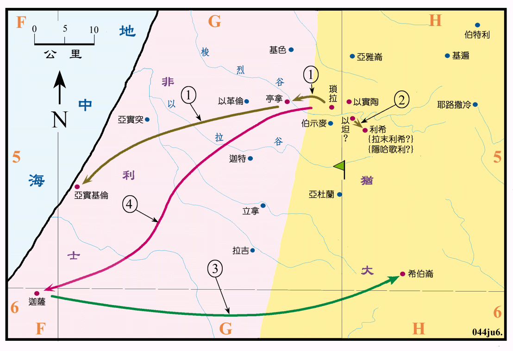

1075～1055BC

行动线说明
| 序号 | 圣经 | 说明 |
|---|---|---|
| 士13章 | 非利士人欺压以色列人四十年，耶和华使但族的玛挪亚生了参孙，以拯救以色列人。 | |
| 1 | 士14:1 | 参孙到亭拿要娶非利士女子为妻，他下到亚实基伦击杀了三十个非利士人。 |
| 士15:1-8 | 参孙用狐狸烧了非利士的禾稼和葡萄园，非利士人就烧了他的妻子和岳父，他为妻子报仇，再杀了许多非利士人，然后下去住在以坦。 | |
| 2 | 士15:9-20 | 犹大人在以坦把参孙捆绑了，送到利希非利士人那里，参孙在那里击杀了一千多个非利士人。参孙作以色列的士师二十年。 |
| 3 | 士16:1-3 | 参孙到迦萨，半夜起来，把城门拆下来，扛到希伯仑城的山顶上。 |
| 4 | 士16:4-31 | 参孙在梭烈谷被大利拉探知他有力的 密，就被非利士人捉到迦萨，剜了他的眼睛，使他做苦工，结果参孙在被戏辱之时，将大庙推倒，压死了许多的非利士人，他也被压身亡。 |
非利士人在很早以前就不断的移入肥沃的南部沿海平原，待主前十二世纪时，自迦斐托等岛的海上民族大举入侵之后，人数大增。又因带来制造铁器的技术，就更形壮大，他们有五个首领，分别建有亚实突、亚实基伦、迦萨、迦特和以革伦等五个大城市，非利士人一直有并吞迦南地的野心，长久不断的攻击以色列人，到参孙的时代，非利士已成为以色列人的大患。
参孙是一个独来独往的士师，一次从他自亭拿下到亚实基伦，路程有40馀公里，去击杀了三十个人。又有一次他把迦萨城的城门连门框拆下，一齐连夜的扛到60公里以外，比迦萨高有1000公尺的希伯仑的山顶，实在是有过人之精力。